Assignments
Assignment 1 - Basic HTML

First Assignment in which basic html structure and syntax was declared. We implmented concepts such as headers, paragraphs, unordered lists, images, and more.
Assignment 2 - Basic CSS

Second Assignment in whcih we learend to use basci CSS to style a webpage. This included concepts like CSS syntax, background colors, text colors, fonts, and more.
Assignment 3 - Page Layout

Third assignment in which we learned to use CSS flexbox to create both horizontal and vertical layouts. We also learned to use media queries to adjust the layout for different screen sizes.
Assignment 4 - Recreate CSS
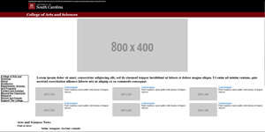Fourth Assignment in which we had to visually recreate a website using html and CSS. This focused heavily on the use of flex containers and media queries.
Assignment 5 - JavaScript Buttons, Functions, and More
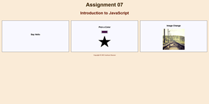Fifth Assignment in which we created a simple website with some JavaScript functionality to include clicking buttons, changing an image, recoloring a shape, etc.
Assignment 6 - JavaScript: Conditionals
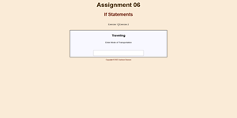Sixth Assignment in which we created a simple website with some JavaScript functionality to include if statements, switch statements, and a few other javascript features.
Assignment 7 - JavaScript: Loops
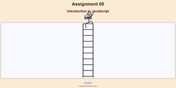Seventh assignment in which we created a small animation of a man climbing some stairs. Both the stairs and man climbing the stairs were created using loops.
Assignment 8 - JavaScript: Arrays
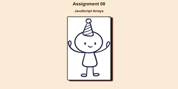Eight assignment in which we used learned Arrays/Maps to create a key value pair object and had it hold a key and an image for a interactice webpage
Assignment 9 - Classes
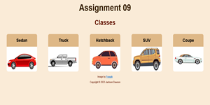Ninth Assignment in which we were introduced to the basics of JS classes and how to interact with them and the DOM. Also learned how to create a working modal.
Assignment 10 - Server Side Hello World
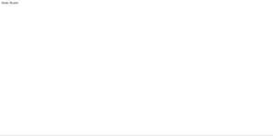 Code Repo Live DemoTenth Assignment in which we set up a basic implementation of server side code to create a web app to hold the text "Hello World"
Portfolio Project
Part 1 - Topic Selection

Part one of the portfolio project in which I selected a topic to create a website for. I selected the topic of a personal portfolio website to showcase my work throughout school and my career.
Part 2 - Wireframe

Part two of the portfolio project in which I created a wireframe for my soon to be website. The Wirefram is simply a visual proof of concept that allows me to visualize what I want my website to look like in the future.
Part 3 - HTML and CSS
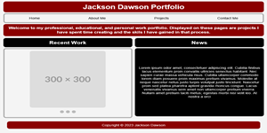Part three of the portfolio project in which I created all the pages of my website from the wireframe in HTML and edited them with CSS. Included a little bit of JS as well.
Part 4 - Color, Text, and Images
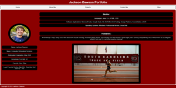Part four of my portfolio project updated all placeholders with proper text, images, and edited some of the color scheme used in part 3. Also added a blog page to meet project requirements.
Part 5 - Improve Your Website
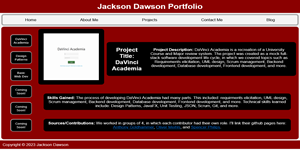Part five - switched out an image and tweaked a background color thought process. Ultimately didnt change much from part 4, content with most content.
Part 6 - JSON File Parsing
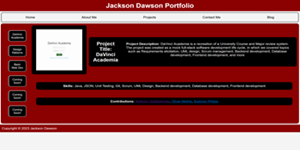Part six - changed hard-coded infromation on the projects page into an JSON file and parsed it into the proper HTML elements utlizing JS and fetch libraries.
Part 7 - Contact Form and JavaScript
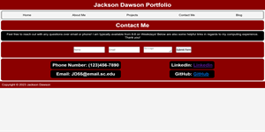 Contact Form iFrame PagePart seven of my project in which we created a contact form that sends an email to my personal email with the forms information. I also learned to add an Iframe for my blog.
Part 8 - React Site Components and Pages
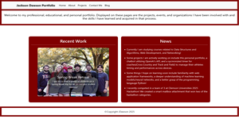 GithubPart Eight of my project in which we recreated our entire static HTML/CSS/JavaScript page into a static React application deployed on github pages.
Part 9 - More JS and Server Get Request
 Github: Server Side Code
Github: Client Side Code
Render: Server Side
Client Side Website
Github: Server Side Code
Github: Client Side Code
Render: Server Side
Client Side Website
Part Nine of my project in which we added server side code for pulling JSON data into the react project components page. Also added functionality for contact form.
Part 10 - Post Request
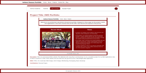 Github: Server Side Code Github: Client Side Code Render: Server Side Client Side WebsitePart Ten of my project where we implemented a POST feature where I added functionality for adding a project to the projects section of my portfolio
Part 11 - Edit and Delete Requests
Github: Server Side Code Github: Client Side Code Render: Server Side Client Side WebsitePart Eleven of my project was adding functionality to edit and delete both already existing projects and newly added projects. This was done with PUT and DELETE.